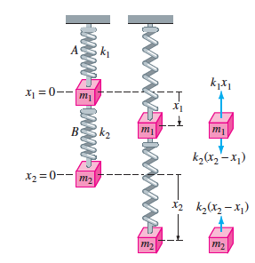

Ingeniería Civil
Logo Instituto
Tal como vimos en la unidad anterior, se puede modelar el movimiento de una masa adherida a un resorte mediante una EDO lineal de segundo orden. Con la ayuda de las leyes de Newton y de Hooke también podemos modelar resortes acoplados.

Dado que hay dos masas, para cada una de ellas aplica la ley de Newton. Una vez que el sistema está en equilibrio (de modo que la gravedad ya hizo su efecto) sobre la masa \(m_1\) actúan la fuerza del resorte \(A\) y la fuerza del resorte \(B\) por lo que se verifica que \[m_1\ddot x_1=F_{\text{resorte \(A\) sobre \(m_1\)}}+F_{\text{resorte \(B\) sobre \(m_1\)}}=-k_1x_1+k_2(x_2-x_1).\]
Sobre la masa \(m_2\) solo actúa el resorte \(B\) por lo que se cumple \[m_2\ddot x_2=F_{\text{resorte \(B\) sobre \(m_2\)}}=-k_2(x_2-x_1).\]
Lo anterior nos dice que el movimiento de ambas masas está completamtente descrito por el sistema de EDOs de segundo orden \[\left\{ \begin{aligned} m_1\ddot x_1 &=-k_1x_1+k_2(x_2-x_1)\\ m_2\ddot x_2 &=-k_2(x_2-x_1). \end{aligned} \right.\] Sobre el cual se deben imponer condiciones iniciales para los desplazamientos \(x_1(0)\), \(x_2(0)\) y sus respectivas velocidades \(x_1'(0)\), \(x_2'(0)\)
Resuelva el sistema de EDOs \[\left\{ \begin{aligned} 2\ddot x_1 &=-4x_1+2(x_2-x_1),&&x_1(0)=3,&\dot x_1(0)&=0,\\ \ddot x_2 &=-2(x_2-x_1),&&x_2(0)=3,&\dot x_1(0)&=0. \end{aligned} \right.\]
Usamos la transformada de Laplace para obtener que \[x_1(t)=2\cos t+\cos (2t)\quad\text{e}\quad y(t)=4\cos t-\cos(2t).\]
Resuelva el sistema de EDOs asociado a resortes acoplados \[\left\{ \begin{aligned} \ddot x_1 &=-10x_1+4x_2,&&x_1(0)=0,&\dot x_1(0)&=1,\\ \ddot x_2 &=4x_1-4x_2,&&x_2(0)=0,&\dot x_1(0)&=-1. \end{aligned} \right.\]
También se puede dar la situación de que sobre la masa \(m_2\) actúe una fuerza externa (por ejemplo un motor)
En este caso la ley de Newton aplicada sobre la masa \(m_2\) nos dice que \[m_2\ddot x_2=F_{\text{resorte \(B\) sobre \(m_2\)}}+F_{\text{externa}}=-k_2(x_2-x_1)+F_e.\] de donde el sistema queda de la forma \[\left\{ \begin{aligned} m_1\ddot x_1 +(k_1+k_2)x_1-k_2x_2&=0\\ m_2\ddot x_2 -k_2x_1+k_2x_2&=F_e. \end{aligned} \right.\]
Resuelva el sistema de EDOs \[\left\{ \begin{aligned} 2\ddot x_1+6x_1-2x_2&=0,&&x_1(0)=3,&\dot x_1(0)=0,\\ \ddot x_2-2x_1+2x_2&=37\cos(3t),&&x_2(0)=3,&\dot x_1(0)=0. \end{aligned} \right.\]
Use la transformada de Laplace para resolver los siguientes sistemas de ecuaciones diferenciales.